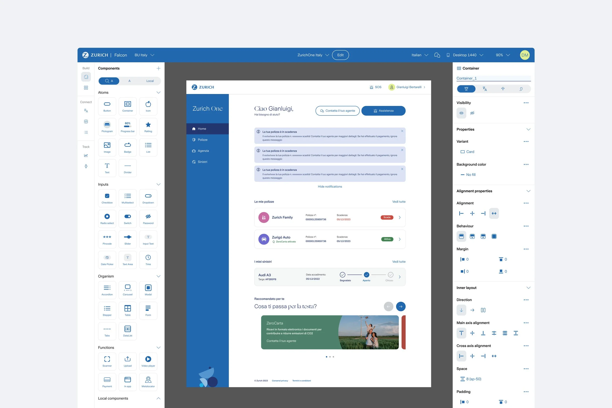
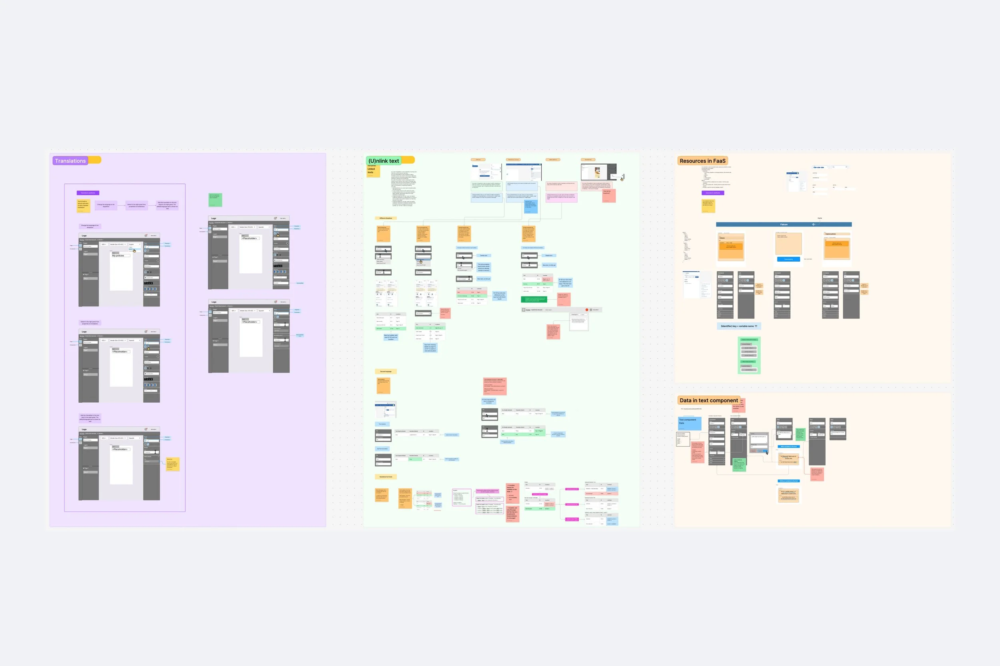
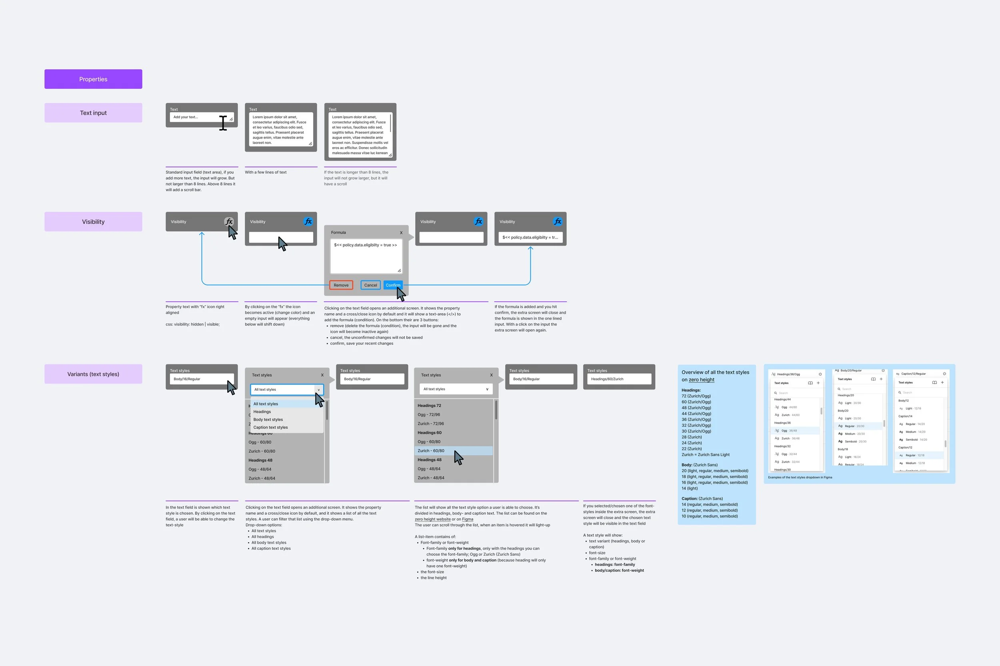
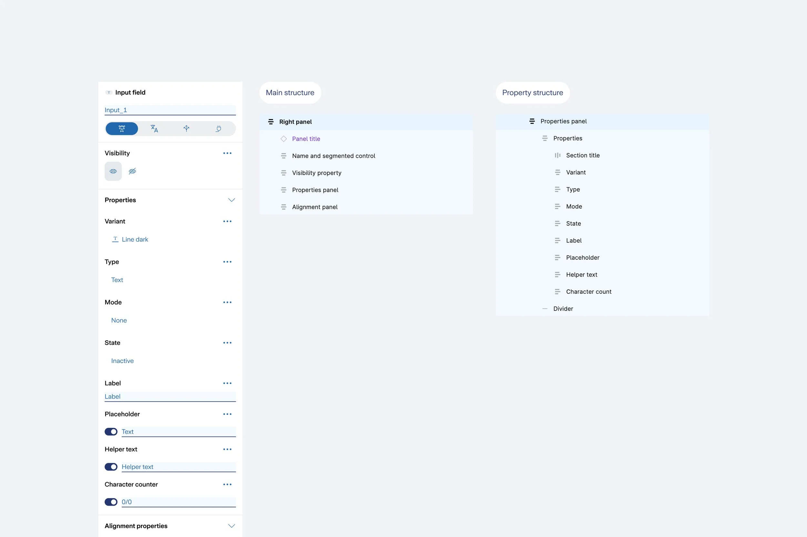
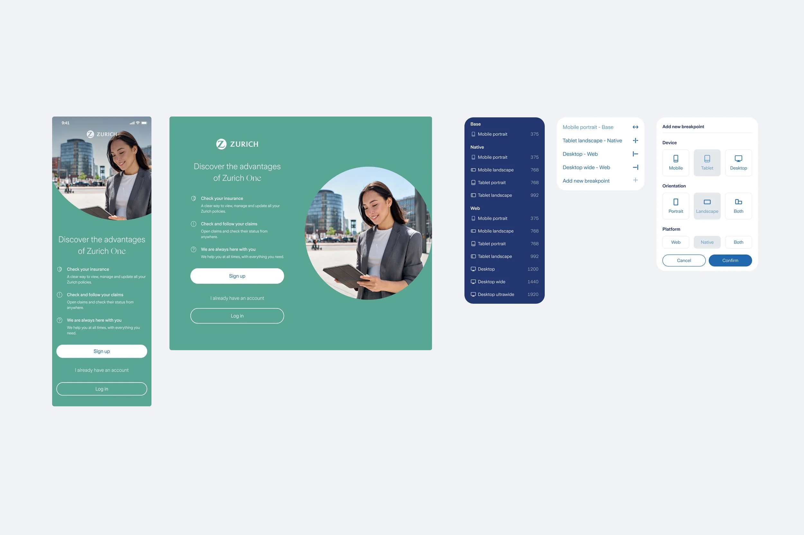
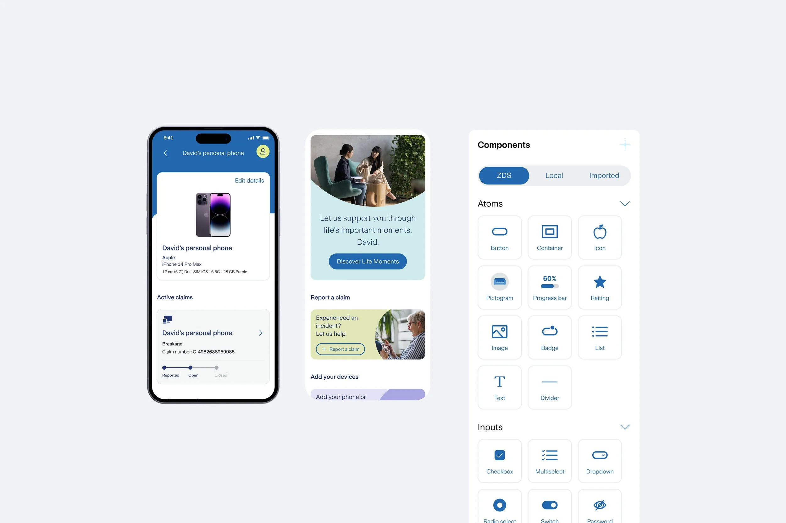
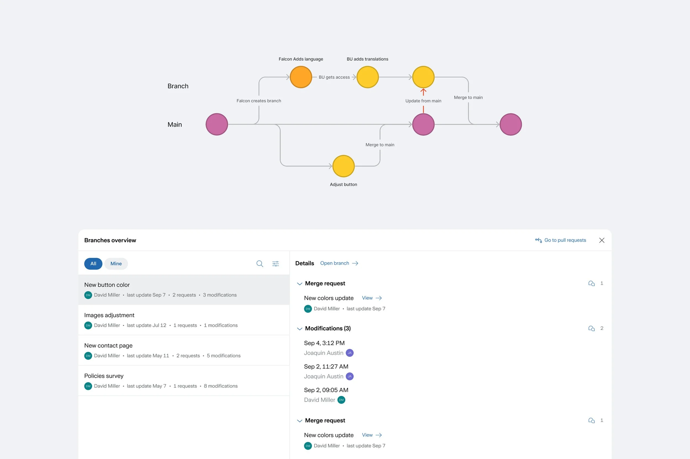
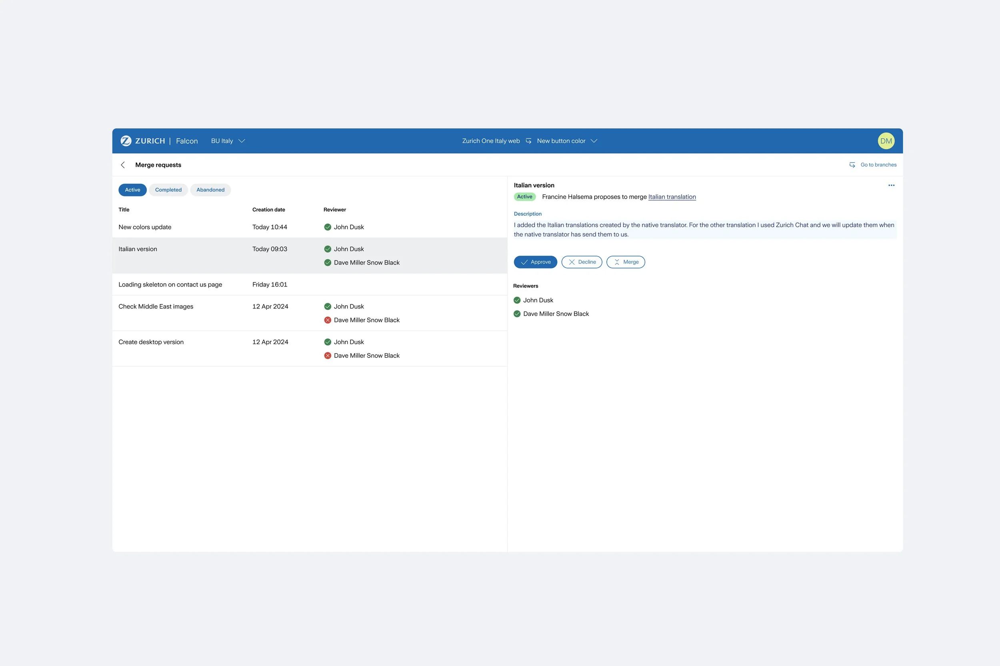
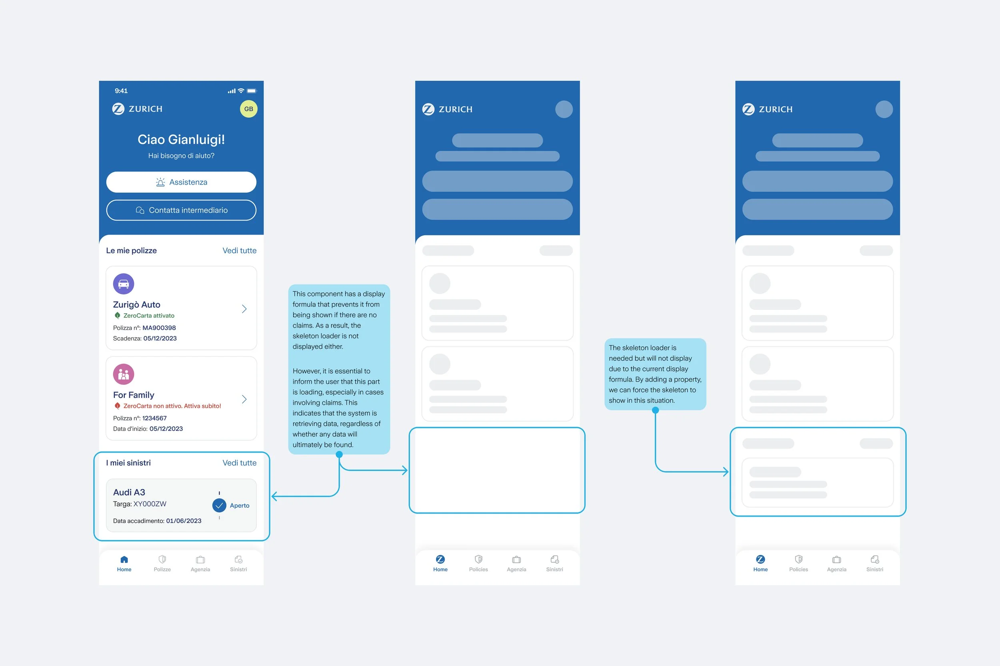
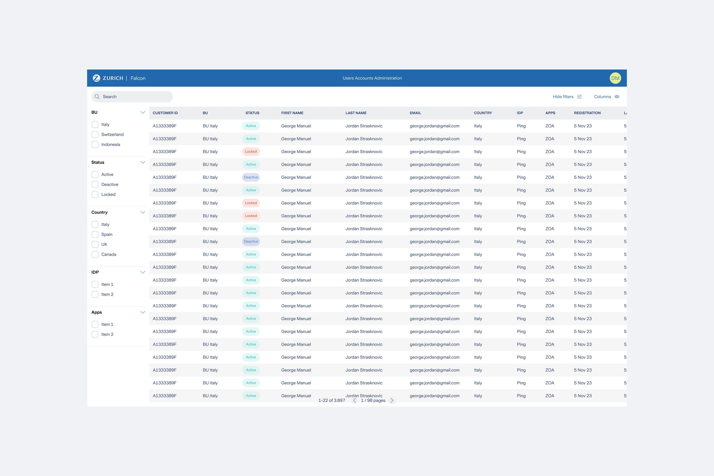

Falcon is Zurich's internal SaaS platform for building digital products end-to-end, from design to implementation, aligned with the design system and unifying technologies. I led the platform's user experience and design, collaborating closely with designers and technical teams.

Finding solutions
The first step was to design a simple tool for a globally necessary task: managing languages. A platform where each country can adapt existing products to their local language.



Going further
We encountered a challenge: different countries not only needed to update the language but also to customize functionalities, as not all products and services are offered in every market. This created the need to gradually add more and more customization options.



The outcomes
Dynamic Panels
The left and right panels adapt dynamically to the user's current task, displaying only the tools that are relevant at each moment.




Responsive Breakpoints
The platform supports responsive breakpoints that allow users to preview and design experiences across different screen sizes. This ensures layouts adapt seamlessly to multiple devices.

Isolation mode
The isolation feature allows users to focus on and edit a container that is nested within another container. By temporarily isolating the selected element from its surrounding structure, the interface reduces visual noise and makes precise editing faster and more intuitive.

Design System Integration
The platform is fully integrated with the design system, ensuring consistency and scalability across all experiences.

Branches
Branches allow teams to work on multiple versions of the same experience in parallel. Designers and developers can safely explore ideas, test changes, and iterate independently.



Force display skeleton
This feature is focused on improving how users perceive waiting time during loading. Instead of leaving users with an empty screen or an abstract spinner, we show skeleton placeholders that mirror the layout of the final content.

Customers database
This feature allows business units to easily manage and organize portal customers database. Each country can view, search, filter, and update customer information through a clear and structured interface, making it faster to find the right customer and take action.

Business impact
8 BU
Eight business units (countries) have adopted the platform.
287 licenses
Third-party software accounts can be eliminated, saving costs and streamlining processes.
27%
Fewer Consistency Queries thanks to the design system integration.
Challenges
Designing for designers and implementing for developers presented significant challenges. It was inevitable (and necessary) to face comparisons, especially when introducing a new platform while teams were already comfortable with existing, well-established tools.
Conclusion and next steps
It has been a challenging but rewarding journey to create a tool that enables colleagues and other professionals to build the company's digital products. Thanks to the collaboration of the entire team, we have made significant progress. Ideas flowed constantly—new proposals and innovations every day—all aimed at building something powerful and lasting. We pushed the design system to its limits, which helped us identify weaknesses, improve it, and scale effectively. The next steps focus on continuous improvement. We are currently exploring how to integrate customer support into the same platform, leveraging the customer databases from each business unit, along with many other exciting ideas.
Note: due to information sensitivity, some of the data shown here isn't 100% exact, and not all processes or screens are displayed. It's also worth mentioning that improving metrics (or sometimes not hitting targets) isn't just on the Product team. It takes all teams working together to make the experience better and get the best results.